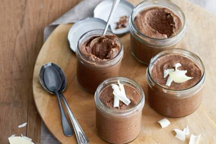

Geef een twist aan deze klassieker door bij het mengen van de chocolade met de slagroom 1 tl kardemom en 1 stick espresso (pak 25 stuks) erdoor te roeren. Ook lekker: voeg 50 ml Amaretto toe, of bestrooi met geschaafde witte chocolade.
ingrediënten
150 g pure chocolade 78%
2 middelgrote eieren
50 g witte basterdsuiker
200 ml verse slagroom
Bereidingswijze
Hak de chocolade fijn. Laat de chocolade in ca. 5 min. au bain-marie smelten in een kom boven een pan kokend water. Roer af en toe. Neem de kom van de pan.
Splits de eieren. Klop het eiwit met de helft van de suiker met een mixer ca. 5 min. totdat het glanzende stijve pieken vormt. Doe de slagroom in een ruime kom en klop in ca. 3 min. stijf.
Klop de eidooiers los met een garde. Roer de rest van de suiker erdoor.
Roer de gesmolten chocolade door het eidooier-suikermengsel. Spatel het door de slagroom. Spatel het eiwit snel en luchtig in delen door het chocolademengsel.
Schep de chocolademousse in glazen, potjes of coupes, dek af met vershoudfolie en laat minimaal 2 uur opstijven in de koelkast.

Tip
Let op het gebruik van rauwe eieren wordt met het oog op salmonellabesmetting sterk afgeraden voor kwetsbare groepen, zoals kinderen tot 5 jaar, ouderen, zieken en zwangere vrouwen. Voor deze groepen zijn recepten met rauwe eieren niet geschikt.